Signals · Wheatstone Bridge · Noise · DSP · Fourier Methods · Data Presentation
2026-09-12
By the end of this chapter you should be able to:
\[\text{physical quantity} \;\rightarrow\; \text{sensor} \;\rightarrow\; \text{conditioning} \;\rightarrow\; \text{ADC} \;\rightarrow\; \text{DSP} \;\rightarrow\; \text{decision}\]
This chapter is about that chain.
A signal is a physical quantity that carries information and varies with an independent variable — usually time.
Examples:
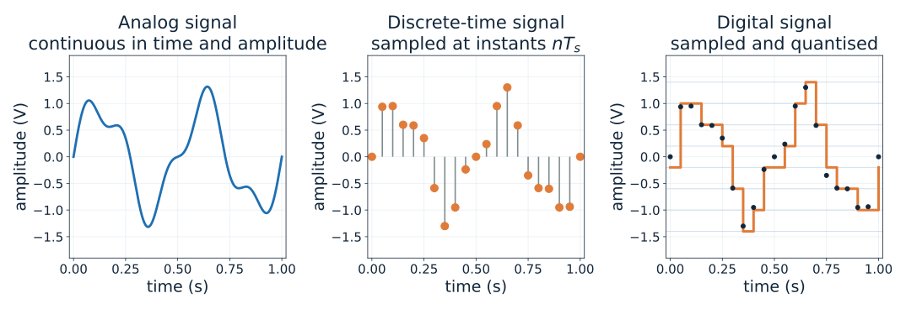
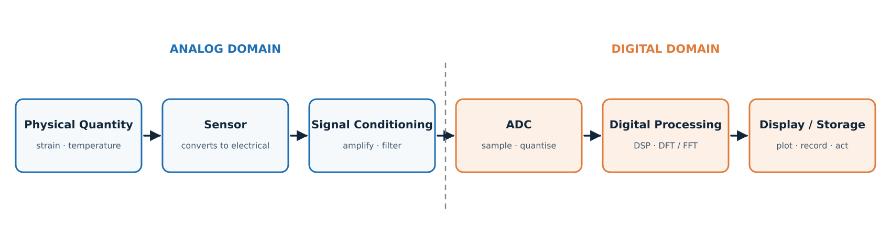
Signal-to-quantisation-noise ratio
\[\mathrm{SQNR} \approx 6.02\,N + 1.76 \ \text{dB}\]
| Bits \(N\) | SQNR (dB) |
|---|---|
| 8 | 50 |
| 12 | 74 |
| 16 | 98 |
| 24 | 146 |
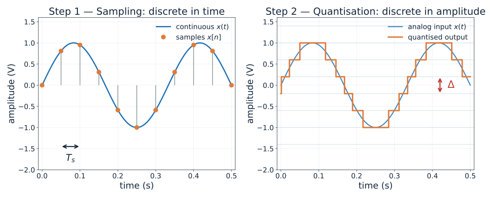
Sampling theorem: a signal band-limited to \(f_{max}\) can be reconstructed exactly only if
\[f_s > 2 f_{max}\]
The frequency \(f_s/2\) is the Nyquist frequency.
If \(f_s < 2f\), a component at \(f\) appears at the alias frequency
\[f_{alias} = \left| f - k f_s \right| \quad \text{for the integer } k \text{ giving } f_{alias} \le f_s/2\]
Aliasing is irreversible — once a component folds into the baseband it cannot be separated from the genuine low-frequency content.
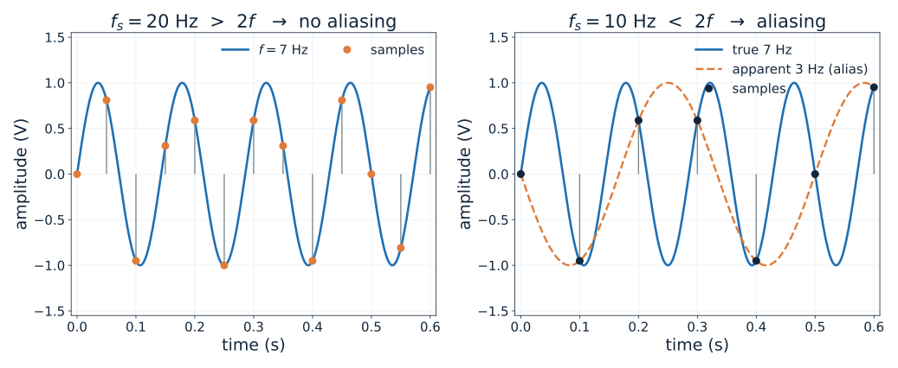
A 4–20 mA pressure transmitter is sampled at 100 Hz. What is the highest frequency that can be represented without aliasing?
A 16-bit ADC has a 10 V full-scale range. What is \(\Delta\), and what is the maximum quantisation error?
Why is an anti-aliasing filter placed before the ADC rather than implemented digitally afterwards?
Many of the most common sensors are resistive:
| Sensor | Quantity | Typical change |
|---|---|---|
| Strain gauge | strain | \(\Delta R/R \sim 10^{-3}\) |
| RTD (Pt100) | temperature | \(\Delta R/R \sim 10^{-1}\) |
| Thermistor | temperature | \(\Delta R/R \sim 10^{-1}\) |
| LDR | light | \(\Delta R/R \sim 10^{0}\) |
Data acquisition systems and ADCs measure voltage, not resistance.
\[\text{resistance change} \;\longrightarrow\; \text{voltage signal} \;\longrightarrow\; \text{amplification} \;\longrightarrow\; \text{ADC}\]
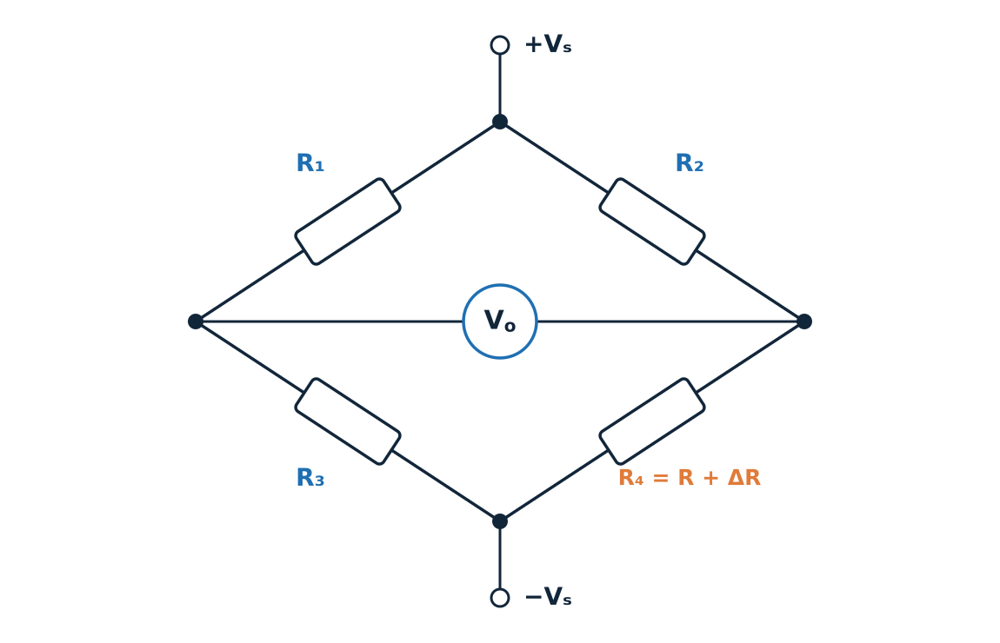
\[R_1 R_4 = R_2 R_3 \quad\Longleftrightarrow\quad \frac{R_1}{R_2} = \frac{R_3}{R_4}\]
With \(V_s\) across the top and bottom nodes and the output taken between the left and right nodes:
\[V_o = V_s\left[\frac{R_3}{R_1+R_3} - \frac{R_4}{R_2+R_4}\right]\]
Quarter bridge — only \(R_4\) is active, \(R_4 = R + \Delta R\):
\[V_o = -\frac{V_s}{4}\cdot\frac{\Delta R/R}{1 + \tfrac{1}{2}\,\Delta R/R}\]
For small changes \(\Delta R \ll R\):
\[\boxed{\;V_o \approx -\frac{V_s}{4}\cdot\frac{\Delta R}{R}\;}\]
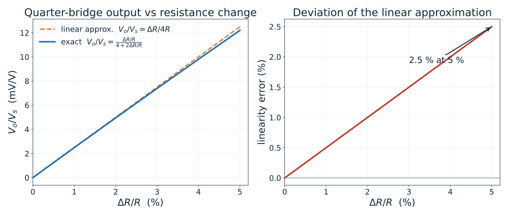
Given
Required — bridge output \(V_o\) and the gain needed to reach 1 V.
Method — \(\dfrac{\Delta R}{R} = GF\cdot\varepsilon\), then \(V_o \approx \dfrac{V_s}{4}\cdot\dfrac{\Delta R}{R}\)
Substitution
\[\frac{\Delta R}{R} = 2.0 \times 500\times10^{-6} = 1.0\times10^{-3}\]
\[\Delta R = 350 \times 1.0\times10^{-3} = 0.35\ \Omega\]
\[V_o \approx \frac{5}{4}\times 1.0\times10^{-3} = 1.25\ \text{mV}\]
Interpretation
This is exactly why signal conditioning exists.
Noise is any unwanted disturbance that corrupts the information carried by the signal. Unlike interference, most noise is random and cannot be predicted sample by sample.
| Type | Physical origin | Spectrum |
|---|---|---|
| Thermal (Johnson) | Random motion of charge carriers in any resistor | Flat (white) |
| Shot | Discrete arrival of carriers across a junction | Flat (white) |
| Flicker (\(1/f\)) | Traps, defects, slow drift in semiconductors | \(\propto 1/f\) |
| Interference | Mains, motors, switching supplies | Discrete lines |
| Quantisation | Rounding in the ADC | Broadband, low level |
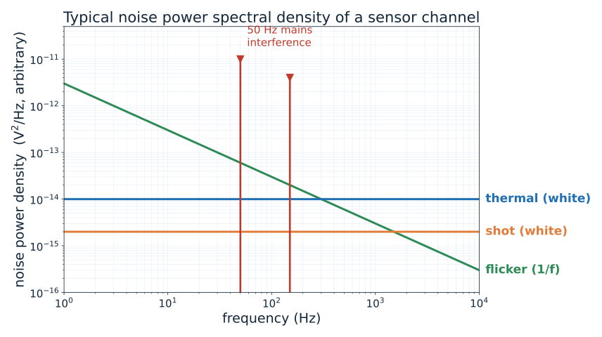
\[\mathrm{SNR} = 10\log_{10}\frac{P_{signal}}{P_{noise}} = 20\log_{10}\frac{A_{signal,rms}}{A_{noise,rms}}\ \ \text{dB}\]
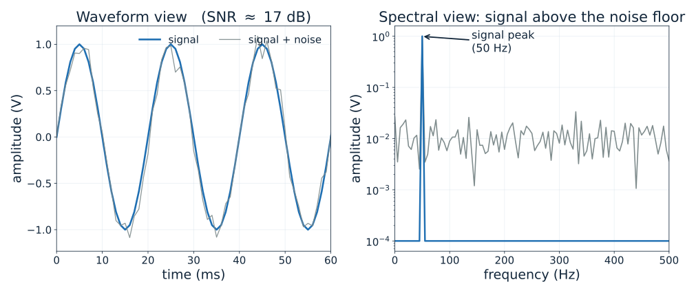
1. Reduce the bandwidth
Narrow-band measurement rejects out-of-band noise power.
2. Average \(M\) measurements
For uncorrelated noise, \(\mathrm{SNR}\) improves by \(\sqrt{M}\) (that is, \(+3\) dB per doubling of \(M\)).
3. Use a differential / bridge front end
Common-mode interference is rejected by the difference amplifier.
4. Amplify early
The amplifier’s own noise is referred to the input, so gain placed before the noise source dominates the budget.
5. Shield, twist and ground carefully
Reduces mains pick-up and ground loops before they enter the channel.
Once the signal is a sequence of numbers, we can do things that are difficult, expensive or impossible in analog hardware:
Trade-off: the signal must cross the analog-to-digital boundary, and that boundary is where resolution and bandwidth are lost.
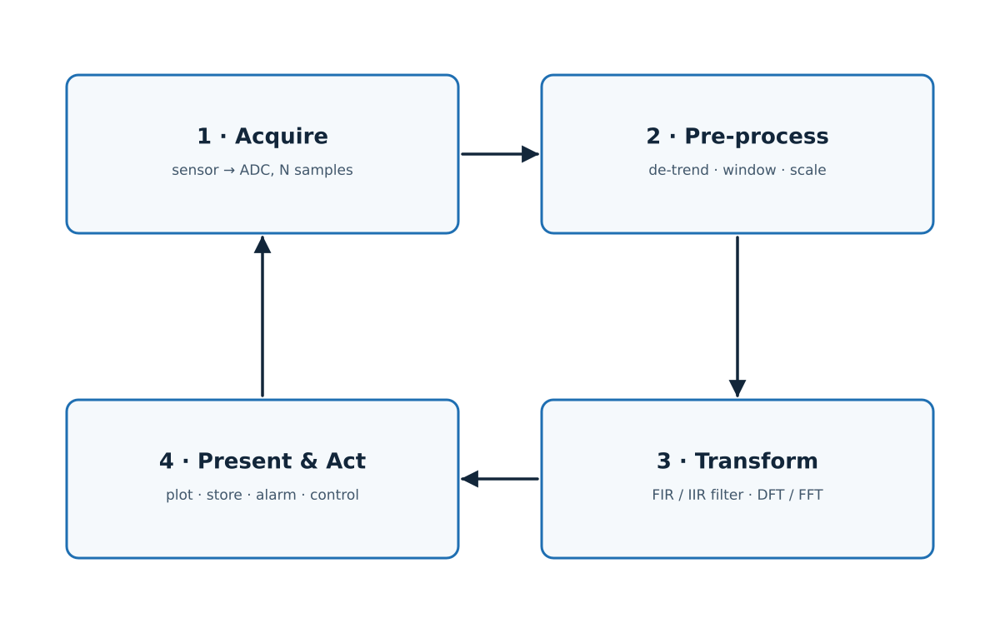
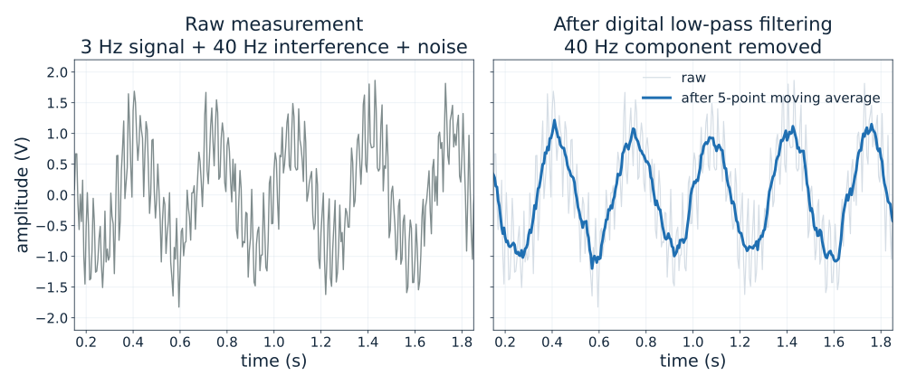
| Aspect | Analog processing | Digital processing |
|---|---|---|
| Filter response | Limited by component tolerances | Exact and repeatable |
| Reconfiguration | Re-solder / re-design | Change coefficients |
| Drift and ageing | Yes | No |
| Storage | Not possible | Trivial |
| Speed | Instantaneous | Limited by clock and \(N\) |
| Power | Usually low | Higher for high rates |
| Resolution limit | Thermal noise | Quantisation + clock jitter |
Any physically realisable signal can be written as a sum of sinusoids.
\[x(t) = \sum_{k} A_k \sin(2\pi f_k t + \phi_k)\]
The Fourier transform finds the amplitudes \(A_k\) and phases \(\phi_k\) that build the signal — it converts a description in time into a description in frequency.
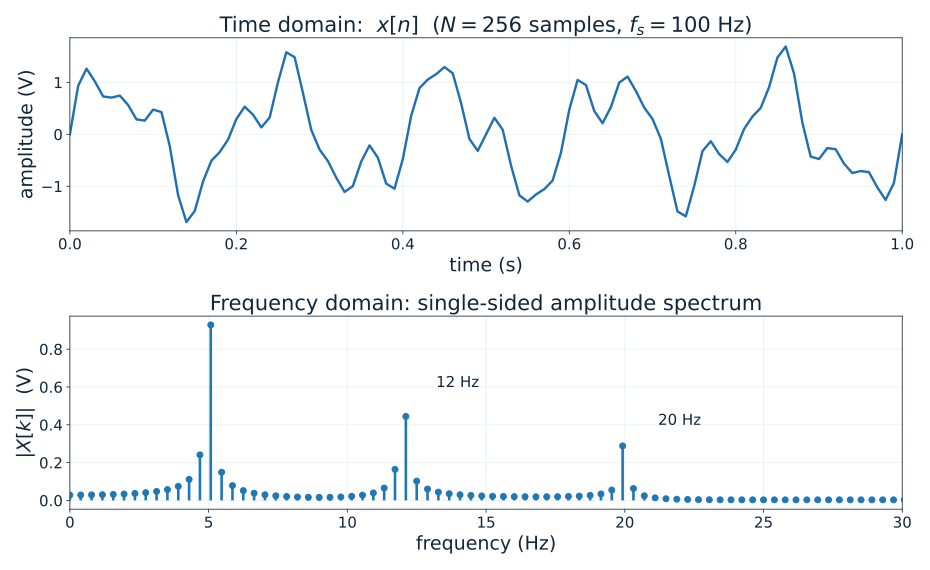
For a sequence \(x[0], x[1], \dots, x[N-1]\) sampled at \(f_s\):
\[X[k] = \sum_{n=0}^{N-1} x[n]\, e^{-j 2\pi k n / N}, \qquad k = 0, 1, \dots, N-1\]
The FFT is not a different transform — it is an efficient algorithm for computing exactly the same DFT.
Divide-and-conquer (radix-2): split an \(N\)-point DFT into two \(N/2\)-point DFTs, then repeat.
\[T_{DFT} \approx N^2 \qquad\qquad T_{FFT} \approx N\log_2 N\]
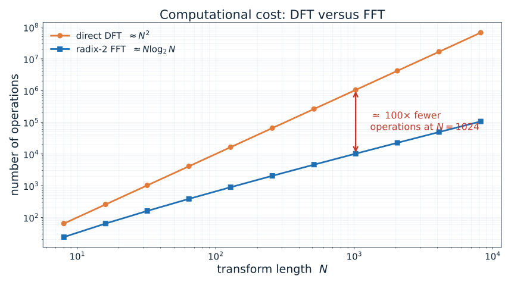
Given
Required — frequency resolution, record duration and the computational saving of the FFT.
Calculation
\[T_{record} = \frac{N}{f_s} = \frac{1024}{10\,000} = 0.1024\ \text{s}\]
\[\Delta f = \frac{f_s}{N} = \frac{10\,000}{1024} = 9.77\ \text{Hz}\]
\[N^2 = 1024^2 = 1\,048\,576 \qquad N\log_2 N = 1024 \times 10 = 10\,240\]
Interpretation — the FFT needs about 100 times fewer operations for the same result. Two tones 9.77 Hz apart can just be resolved; closer tones require a longer record, not a faster algorithm.
A square wave is built up from its odd harmonics, one term at a time.
The inverse discrete Fourier transform reconstructs the time-domain sequence from its spectrum:
\[x[n] = \frac{1}{N}\sum_{k=0}^{N-1} X[k]\, e^{+j 2\pi k n / N}, \qquad n = 0, 1, \dots, N-1\]
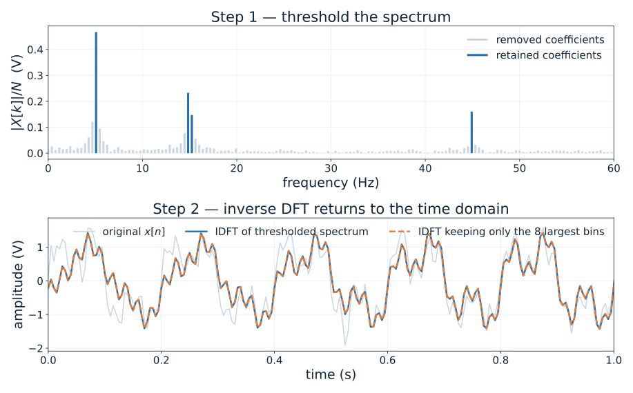
A common practical warning:
Filtering in the frequency domain is circular. Without zero padding, the end of the record wraps around and corrupts the beginning.
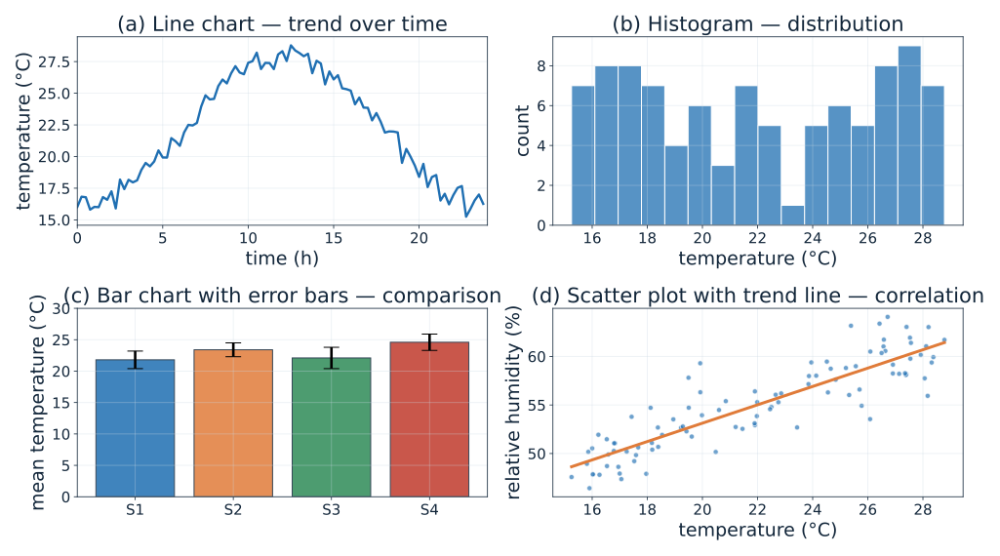
| You want to show… | Use | Avoid |
|---|---|---|
| Change over time | Line chart | Pie chart |
| Comparison of categories | Bar chart with error bars | 3-D bar chart |
| Distribution of values | Histogram, box plot | Averages only |
| Relationship between two variables | Scatter plot with trend | Two separate bars |
| Frequency content | Amplitude spectrum | Time-domain overlay |
| Exact values | Table | — |
Rules that matter in practice
“A higher sampling rate always gives a better measurement.” Not if the anti-aliasing filter is missing — it only moves the alias.
“The bridge output is linear in \(\Delta R\).” Only for small \(\Delta R/R\); the exact expression is \((V_s/4)\cdot(\Delta R/R)/(1+\Delta R/2R)\).
“The FFT is a different transform from the DFT.” It is exactly the same transform computed with fewer operations.
“More bits always mean a better measurement.” Quantisation is only one term; thermal noise, drift and interference may dominate long before 24 bits.
“Noise can be removed completely.” Random noise can be reduced by bandwidth limiting and averaging, never removed.
An accelerometer signal contains components up to 800 Hz. Choose a sampling rate and justify it.
A quarter-bridge strain gauge with \(R = 120\ \Omega\), \(GF = 2.1\) and \(V_s = 10\) V measures \(\varepsilon = 1000\ \mu\varepsilon\). Find \(V_o\).
A measurement has a 2 V RMS signal and 20 mV RMS noise. What is the SNR in dB?
Why does a longer record improve frequency resolution but not the SNR of every individual bin?
Give one measurement situation where a bar chart is more appropriate than a line chart, and explain why.